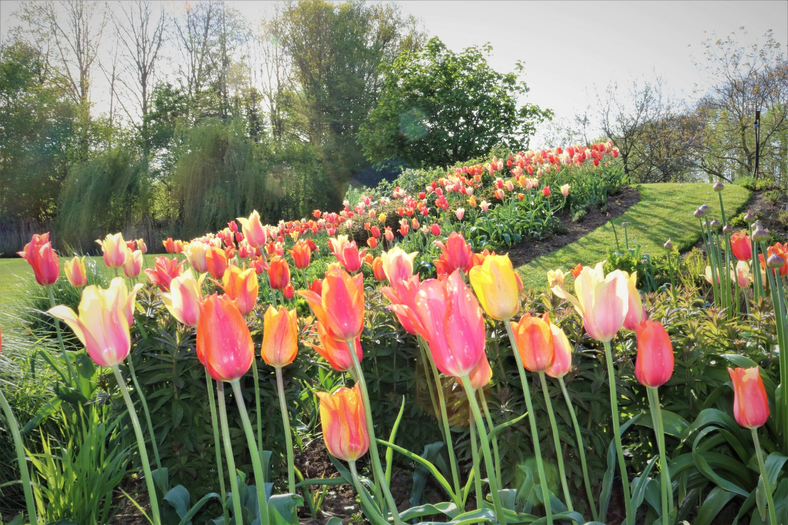
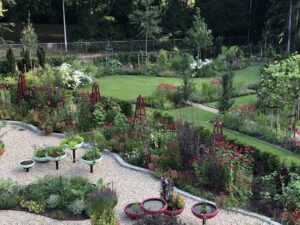
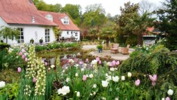
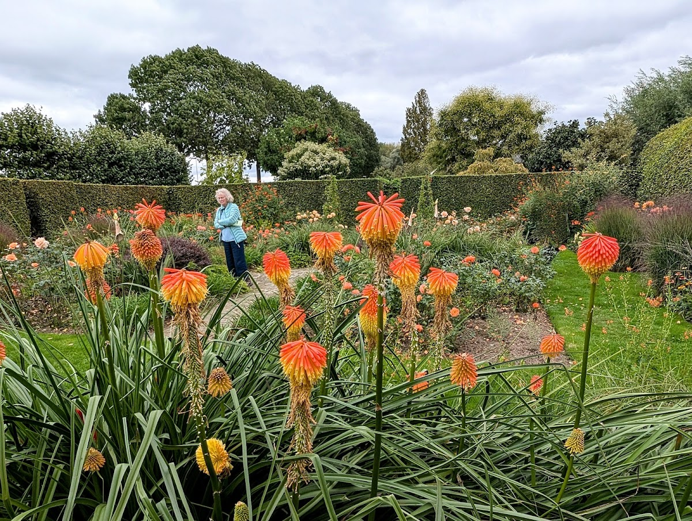
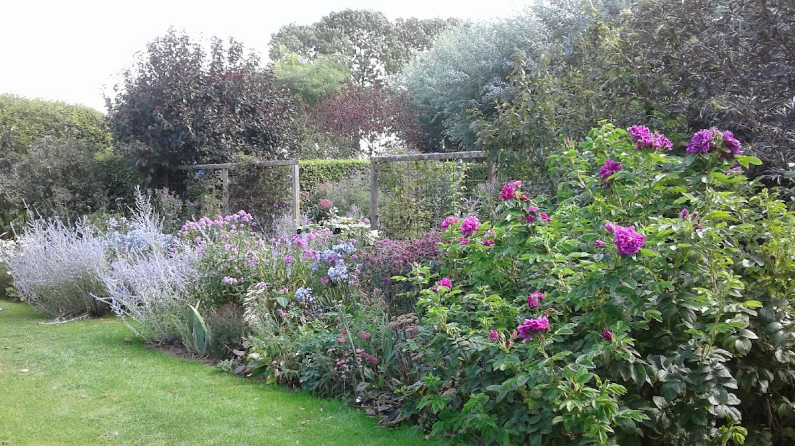

De Tuinen
Anderhalve hectare vol kleur, sfeer en verwondering
Anderhalve hectare vol kleur, sfeer en verwondering
De Tuinen in Demen zijn anderhalve hectare groot en bestaan uit verschillende delen die elk hun eigen kleur en sfeer hebben. De entree bedraagt 6 euro voor individuele bezoekers.
De combinaties van kleuren zijn soms subtiel, soms uitbundig maar steeds uitgekiend en niet alledaags. Het schouwspel van lijnen en doorkijkjes is verrassend en indrukwekkend.
Kennis van planten en gevoel voor kleur zijn hier verenigd met sterk ruimtelijk inzicht en technische ervaring. Dit resulteert in een zowel evenwichtig als spectaculair geheel. Het biedt rust en het prikkelt. Het geeft energie en verleidt tot reflectie.

Het tuinseizoen start in mei met een overdaad aan bollen. Duizenden laatbloeiende tulpen zijn op kleur gecombineerd met voorjaarsbloeiende planten. 20.000 bollen gaan elk najaar de grond in, met daarnaast 20.000 'blijvers' zoals narcissen en blauwe druifjes.
Vanaf half mei stelen irissen en pioenrozen de show. Je kunt meer dan honderd verschillende cultivars van Iris germanica zien, in alle denkbare kleuren. Pioenrozen pronken met hun weelderige bloemen.


Juni is de rozenmaand en in de tuinen staan er meer dan duizend. Prachtig om te zien en heerlijk om te ruiken.
Veel bekende en onbekende vaste planten staan in mooie combinaties te bloeien vanaf juni tot diep in het najaar. Éénjarige planten worden elk jaar in de kas gezaaid. Later in de zomer bloeien asters in alle kleuren en zijn er siergrassen met prachtige bladverkleuring te zien.






